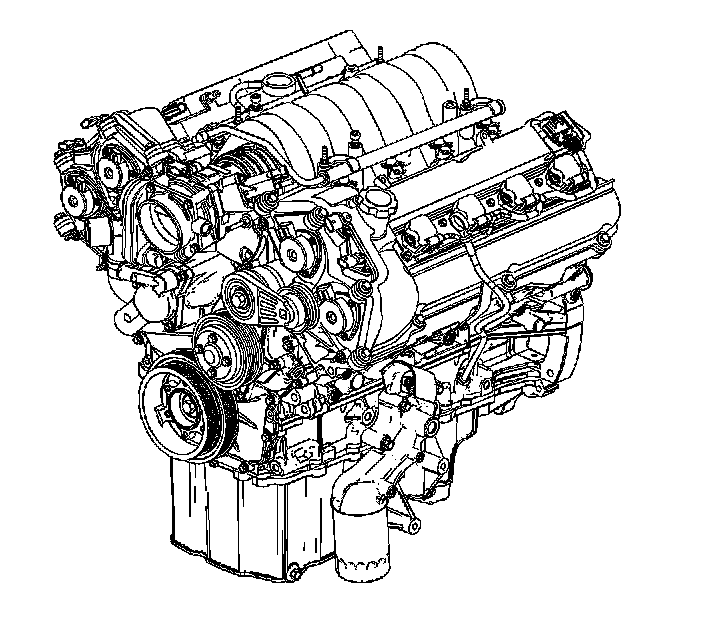

Engine: Description and Operation
Engine Component Description

The Northstar V8 VIN Code A is a 4.6L (279 cu in) engine incorporating two intake and two exhaust valves per cylinder with individual cylinder head mounted camshafts with camshaft position actuators for intake and exhaust functions (DOHC). The cylinder bore diameter is 93 mm (3.43 in) and the piston stroke is 84 mm (3.31 in). The cylinders are arranged in two banks of four with a 90 degree included angle. The left, front, bank of cylinders are number 2-4-6-8 and the right, rear, bank cylinders are 1-3-5-7. Engine firing order is 1-2-7-3-4-5-6-8.
Crankcase
The cylinder block is constructed of aluminum alloy by the die casting method and is constructed of two sections, an upper and a lower crankcase, split at the crankshaft center line. The grey cast iron cylinder liners are cast with the upper crankcase. The upper and lower crankcase sections are held in alignment by four dowel pins. Once machined, the sections must be kept together as a set. Sealing between the crankcase halves consists of a silicone rubber seal and a bead of anaerobic sealant along each side. Since the lower crankcase contains the lower main bearings, this casting adds to the structural rigidity of the engine assembly. Both upper and lower crankcases incorporate oil drain back passages isolated from the crankcase. These passages provide a direct path from the cylinder heads to the oil pan in order to prevent the needless aeration of the oil through contact with the rotating components.
Crankshaft
The crankshaft is a forged steel design with five main bearings. Crankshaft thrust is taken by the number three main bearing. The position sensor, also known as the reluctor wheel, is integral with the crankshaft. The crankshaft is internally balanced and incorporates a one piece rear seal. A rolled fillet radius is incorporated on all bearing journals to improve fatigue strength.
Connecting Rods and Pistons
The connecting rods are forged steel and have full floating piston pins. These pins are slip fit in the bronze bushed rods and are retained in the piston by round wire retainers. The cast aluminum pistons use two low tension compression rings and one multi-piece oil ring. The top compression ring is nitrided steel. The second compression ring is coated cast iron. The oil ring is a three piece side seal type ring which incorporates a steel expander and two chrome plated steel rails. To provide a non-scuffing surface when the engine is new, the pistons are tin plated. The piston skirts are coated with a coating to provide reduced friction.
Camshaft Drive System
The four overhead camshafts are driven by three separate fine pitch chains. The primary drive chain connects the crankshaft with the intermediate shaft and sprocket located directly above the crankshaft behind the engine front cover. Each camshaft drive chain connects the intermediate sprocket with the camshaft position actuators on each intake and exhaust camshafts on the cylinder heads. Two camshaft drive chains are used; one for each cylinder head. Each of the chains incorporates a hydraulic tensioner to minimize chain noise and provide accurate valve action by keeping slack out of the chain and continuously adjusting for chain wear. This is accomplished by providing engine oil pressure to each tensioner forcing a nylon pad into mesh with the slack side of the chain. As the chain stretches from wear, a ratchet mechanism inside the tensioner prevents the nylon pad from retracting when the engine is turned off and engine oil pressure ceases.
Camshaft Position Actuator System
The camshaft position actuator system is an electronically controlled and hydraulically actuated system. The camshaft position actuator system enables the engine control module (ECM) to change camshaft timing of all four camshafts hydraulically while the engine is operating.
Two camshaft position actuator magnets, one for each camshaft position actuator oil control valve, are mounted to a camshaft position actuator housing on the front of each cylinder head. The ECM energizes the camshaft position actuator magnet in order to create a magnetic field. The magnetic field created by the camshaft position actuator magnet pulls, from the home position, the spring loaded spool valve in the center of the camshaft position actuator oil control valve. The camshaft position actuator oil control valve is incorporated into the fastener that bolts the camshaft position actuator to the camshaft. Alignment between the camshaft position actuator magnet and the camshaft position actuator oil control valve is crucial. An air gap must be maintained between both components.
Oil under pressure is supplied to the front camshaft bearing cap and flows through passages into the camshaft front journal. The camshaft front journal passages supply oil to the camshaft position actuator oil control valve. The camshaft position actuator oil control valve supplies oil to the camshaft position actuator. The camshaft position actuator oil control valve incorporates a return spring in order to return the internal spool valve to the home position.
The camshaft position actuator contains an inner rotor with vanes bolted to the camshaft and an outer housing incorporating the timing drive chain sprocket and camshaft position sensor trigger wheel. Internally the camshaft position actuator contains a spring loaded locking pin that prevents movement between the inner rotor and outer housing and keeps the camshaft position actuator in the home position. The locking pin releases when proper oil pressure reaches the camshaft position actuator. The exhaust camshaft position actuators also incorporates return springs in order to return the exhaust camshaft position actuators to the home position when the engine is turned off. Due to rotation direction of the intake camshaft position actuators return springs are not necessary.
Oil directed by the camshaft position actuator oil control valve's position is used to vary the advance or return of the camshaft position actuator's vanes from the home position.
Cylinder Heads
The cylinder heads are semi permanent mold cast aluminum with powdered metal valve seat inserts and valve guides. Two 36.2 mm (1.425 in) intake valves and two 29 mm (1.142 in) exhaust valves are actuated by roller finger followers pivoting on a stationary hydraulic lash adjuster (SHLA). Separate intake and exhaust camshafts are supported by five bearings machined into the cylinder head with camshaft thrust taken by the first bearing. The combustion chamber is roughly in the shape of a clover leaf with a nominal volume of 48.6 cc (2.965 cubic inch) and a centrally located spark plug.
Engine Cooling System
The coolant pump assembly is located on the engine front cover. The water outlet housing distributes coolant to the cylinder block and collects it from the cylinder head for delivery to the radiator.
Induction System
The induction manifold is a plastic, lost core casting with a removable plastic sight shield cover.
Right and Left Bank Designation
Right hand (RH) and Left hand (LH) designations through the engine mechanical On-Vehicle Service section are viewed from the rear of the engine.